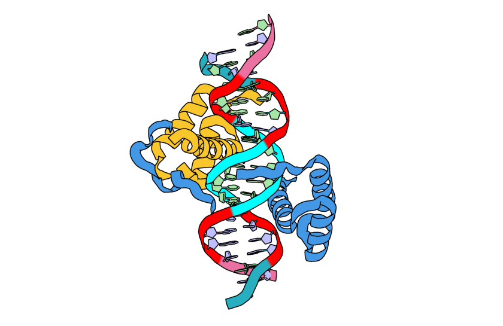
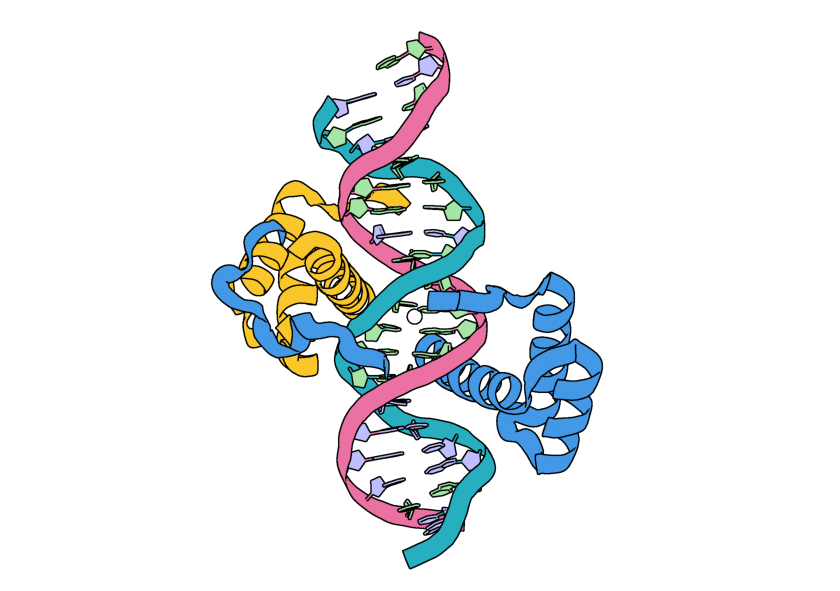
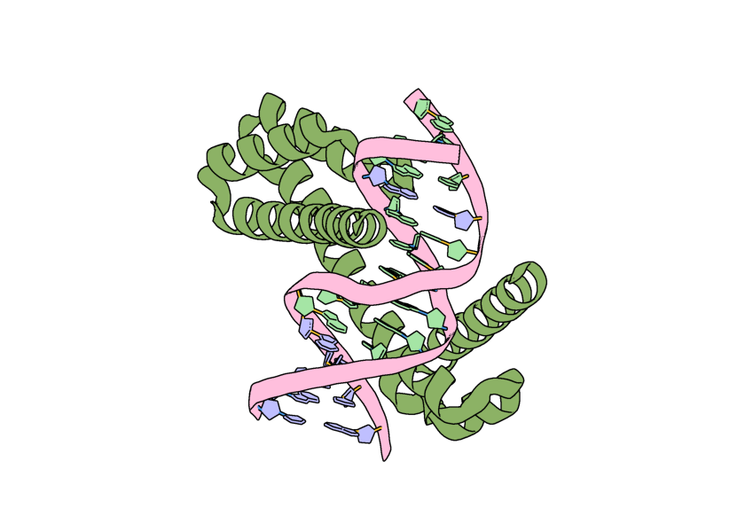
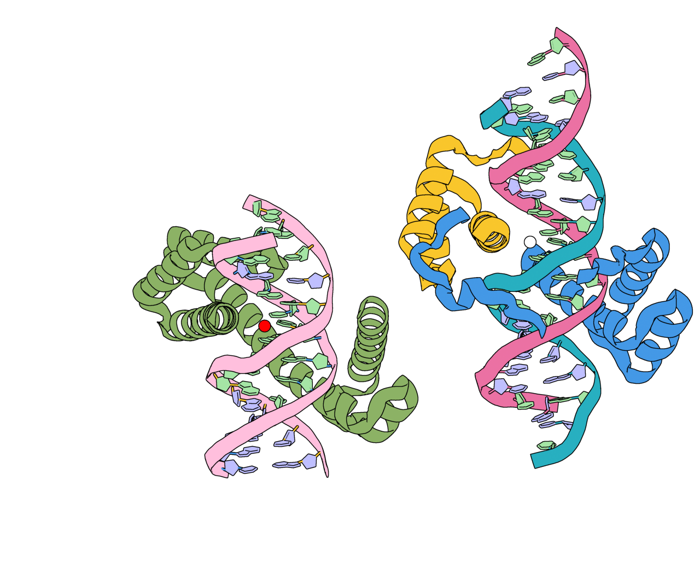
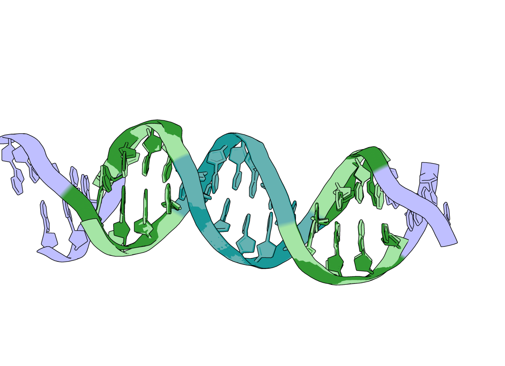
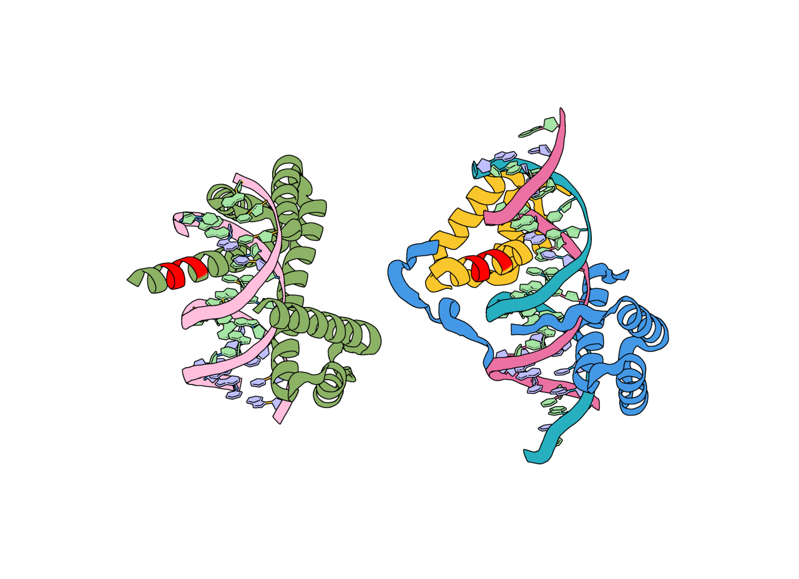
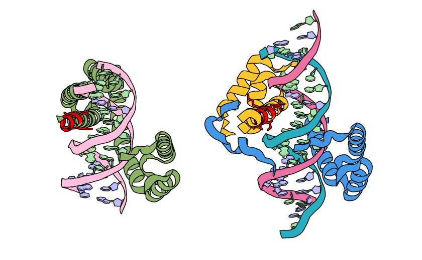

Nuclei Acid Binder Design in RFdiffusion3¶
Before We Get Started…¶
This tutorial does not cover installing RFD3. Before continuing, you should make sure that RFdiffusion3 (RFD3) is installed and runnable on your system. See the README for installation instructions.
Note
You will need to clone the repository to access the tutorial files. Using the pip commands to install the model does not automatically download the files required to complete this tutorial.
RFD3 runs best on GPUs. It is suggested to follow this tutorial on an interactive GPU node if you have access to one.
You will need the file 2r5z.pdb. This is provided in foundry/models/rfd3/docs/input_pdbs. You can clone the foundry repository to easily access files related to this tutorial.
Learning Objectives¶
In this tutorial, we will design a DNA-protein complex to explore the settings available in RFD3 that are useful for nucleic acid binder design.
Setup¶
Create a directory named rfd3_na_tutorial and cd into it:
mkdir rfd3_na_tutorial && cd rfd3_na_tutorial
This is where you will be storing the files related to this tutorial.
If you would like to compare your outputs against those generated by the authors of this tutorial, you can find pre-generated output files in foundry/models/rfd3/docs/tutorials/na_tutorial_files.
The ‘basic’ zip file contains outputs that did not use the setting discussed in the Additional Constraints section. The ‘hbond’ zip file has the outputs resulting from adding hydrogen bond conditioning constraints and the ‘unfix’ zip file has the outputs resulting from adding a constraint that allows the input sequence to be modified.
There is also a pre-made JSON file available in foundry/models/rfd3/docs/na_tutorial_files. We recommend following the tutorial to create this file yourself to better understand the RFD3 options that are relevant to nucleic acid binder design.
Creating the JSON file¶
In this tutorial, we will be briefly describing each of the settings we will be using for this example.
Using your editor of choice, open a new file called
rfd3_na_tutorial.json. This is where we will be storing the options we will use to constrain our enzyme design.This is a JSON file, so all of the options contained in it need to be encapsulated in curly braces ({}). Go ahead and add a pair of these to your file.
Like all designs you will create using RFD3, we need to start by giving our calculation a name. It should be short, but descriptive, so let’s call it
dsDNA_complex. Add this name in quotes to your file and place a colon and another pair of curly brackets after this. Your file should now look like:{ "dsDNA_complex":{ } }
Next we need to specify the structure file (PDB, CIF, etc.) that contains information about any input structures related to our calculation:
"input": "path/to/2r5z.pdb",
To define the portions of our final structure that will be defined vs. taken from our input structure file we will use the
contigoption:"contig": "C5-18,/0,D24-37,/0,40-50,A146-154,80-90",
Let’s break down what’s going on here a bit further:
C5-18: Our final design will start with residues C5-C18 from our input PDB/0: This indicates a chain break, the C5-18 residues will not be connected to anything coming next in ourcontigstring.D24-27: After the chain break we have residues D24-37 from the input structure file./0,40-50: After another chain break RFD3 will design a segment with 40-50 residues.A146-154: residues A146-154 from the input structure will be connected to the C-terminus of the designed residues80-90: RFD3 will design 80-90 residues connected to the C-terminus of A154 from the input structure
Since there are two portions of the designed structure with random lengths, it is useful to specify the overall
lengthof our design:"length": "157-177",
For the purposes of this design, we happen to know that residues B251-255 are important to include in our design, but it does not matter where they end up in our final structure. This is referred to as an ‘unindexed motif’ in the documentation. To include them, we will add the
undindexoption:"unindex": "/0,/0,B251-255",
Here we have two chain breaks before our unindexed motif to correspond to the contig string, these residues will go in the third chain of the output structure.
Next, the portions of our input structure we specified in the
contigstring are automatically held fixed, however it is useful to let some of these residues move in response to the the designed portions of our structure. Here we want certain portions of our DNA strands to be stationary (the middle sections) while the portions towards either end of the double helix can relax:"select_fixed_atoms": { "C9-14":"ALL", "D28-33":"ALL", "C5-8,C15-18": "", "D24-27,D34-37": "" },

Image of the input structure with the fixed residues highlighted in cyan and the residues allowed to move highlighted in red.¶
Note
Holding residues C9-14 and D28-33 is not necessary here and was included for the sake of clarity.
To define where the center of mass of our designed structure should go, we will use an ORI (origin) token:
"ori_token":[25,35,20],
Important
In this example the ori token is placed close to the center of our input structure. When designing your own enzyme scaffolds, you should try many ORI token placements. See the RFdiffusion2 paper for more information about how ORI tokens impact the results of diffusion calculations.

The input structure with the addition of a white sphere to represent the location of the ORI token.¶
Last, but not least, we want our design to have minimal loops. We will use the
is_non_loopyoption for this. As of the creation of this tutorial, there are no other parameters to control the secondary structure of the designs from RFD3."is_non_loopy": true
Save your file and close it. If you run the file now, your files should be similar to what is stored in
foundry/models/rfd3/docs/tutorials/na_tutorial_files/outputs.zip.
{kind=link}
{kind=link}
Additional Constraints¶
The steps in this section are optional, skip to Running RFD3. If you would like to include them, reopen your JSON file and append to what you added in the previous section.
Hydrogen Bond Conditioning¶
Important
Using hydrogen bond conditioning with RFdiffusion3 requires having HBPLUS installed. See the RFdiffusion3 README for more information.
Hydrogen bond conditioning can be useful in the design of nucleic acid binders. Here we will apply it to some backbone and base atoms for a few of the DNA bases:
"select_hbond_acceptor": {"C16":"N7,O6", "D31-32":"N7", "D28-30":"OP1,OP2,O3',O5'"},
"select_hbond_donor": {"D31-32":"N6"}
Unfix Sequence¶
The steps in this section are optional, skip to Running RFD3. If you would like to include them, reopen your JSON file and add the following:
Add the backbone of the unindexed motif (B251-255) to the list of atoms being fixed:
"select_fixed_atoms": { "C9-14":"ALL", "D28-33":"ALL", "C5-8,C15-18": "", "D24-27,D34-37": "", "B251-255": "BKBN" },
Unfix the sequence for the unindexed motif:
"select_unfixed_sequence": "B251-255"
These constraints will keep this portion of the protein backbone in place while allowing the side chains to change.
Running RFD3¶
To actually run RFD3 you need to know:
the directory you want the outputs to be stored in
the path to the JSON (or YAML) file that stores the specific settings for the calculation
the location of your checkpoint files
Once you have these three things you can run something like this from the command line:
rfd3 design out_dir=na_tutorial_outputs/0 inputs=rfd3_na_tutorial.json ckpt_path=/path/to/your/checkpoint/files/rfd3_latest.ckpt
Your output files will be placed in a new directory na_tutorial_outputs/0. Your output files will be named rfd3_na_tutorial_dsDNA_complex_0_model_n.cif.gz where n is the number of the design. rfd3_na_tutorial comes from the name of the JSON file and dsDNA_complex comes from the name you gave your calculation in the JSON file.
Note
You may see several warning messages when you run RFD3, these should not interfere with the calculation.
Analyzing the Outputs¶
You should end up with 8 designs, numbered 0-7, each with its own .cif.gz and .json file. If you want to adjust the number of output designs, add the configuration option diffusion_batch_size to your rfd3 design command.
The JSON file has many details about your diffusion run, including the options in the JSON file you created. The compressed CIF file contains information about the final diffused structure that you can easily visualize with tools like PyMOL.
Your results should look something like this:
{kind=link}

Image of a possible output for this calculation visualized in PyMOL.¶
However, if we visualize the location of our original ORI token it is no where near the center of our output structure! This is because RFD3 has completely moved our structure in coordinate space, and has moved the ORI token with it. In the output JSON files for your designs, the new location of the ORI token can be found by looking at the diffused_com.
{kind=link}

The input structure (right) with its ORI token represented as a white sphere. An example output (left) is shown with the location of the diffused_com represented as a red sphere.¶
You can also align the 2R5Z structure with any of the outputs to see that the atoms selected in select_fixed_atoms have stayed in the same physical locations.
{kind=link}

The DNA strands from the input (lavender, light green, light blue) and a possible output structure (dark green, dark blue). The portions held fixed are in blue and the portions allowed to move are in green.¶
Checking that our unindexed motif is present in our designs is a bit more difficult, but the information we need is provided in the JSON file that is created with each design. If you open one of these JSON files, the first piece of information you see is a diffused_index_map that connects the residues from the input to residues in the output design. You should see that residues B251-255 have been mapped to residues in your output structure.
{kind=link}

Input structure (green) and model_0 (cyan) from the basic.zip outputs with the unindexed motif highlighted in magenta. For this output (model_0 in outputs.zip), the unindexed motif is found in residues C130-134.¶
If you added the additional hydrogen bonding constraints, the outputs should look very similar to those shown from the ‘basic’ calculation. The hydrogen bond conditioning is a statistical effect and difficult to visualize when so many other constraints have been applied.
If you added the select_unfixed_sequence constraint, you will see that your output JSON files still have a mapping between residues B251-255 in the input to the output structure and that the backbones have remained the same but the side chains have changed. For example:
{kind=link}

The input structure (green) and output structure (cyan) with the unindexed motif colored pink. Note how the backbone structures have remained the same, but the side chains have changed.¶
What’s Next?¶
For your actual projects, you would want to filter the designed structures based on metrics relevant to your design task. Then, even though RFD3 outputs come with a sequence, it is recommended to still use sequence design tools (MPNN) to redesign the sequence. Finally you will want to see if the sequence refolds into a similar structure as was predicted by RFD3 using tools like RosettaFold3.